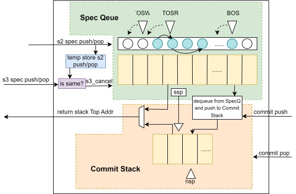
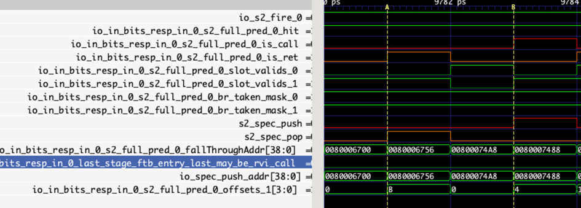
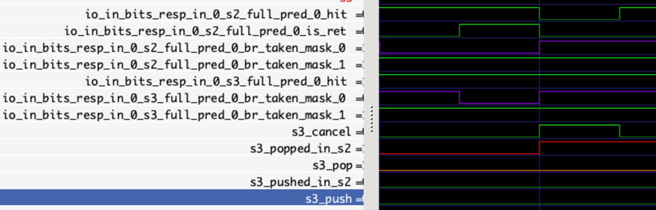
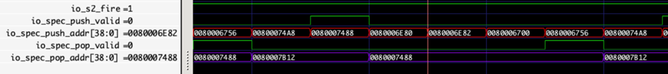
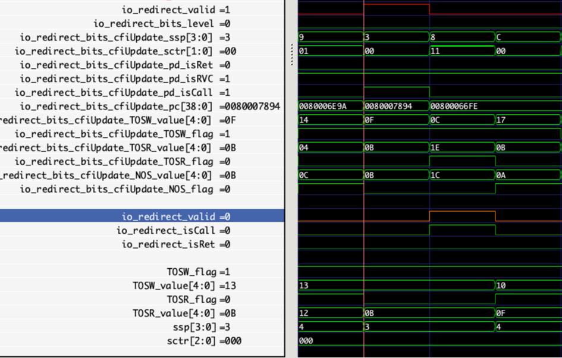
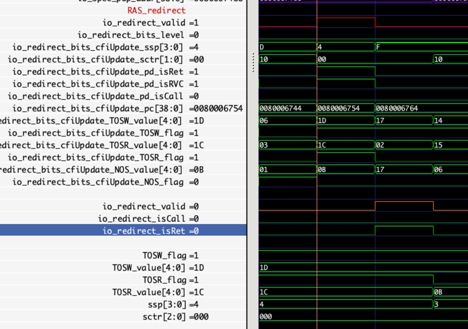
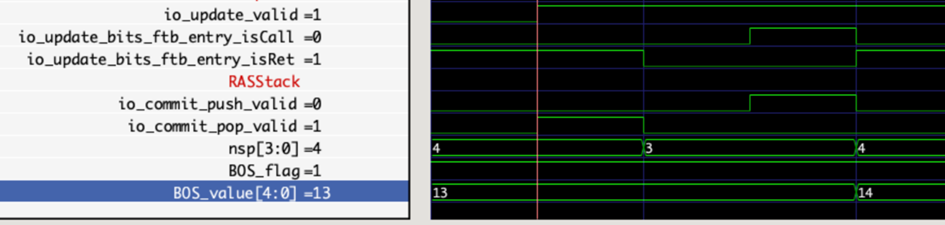
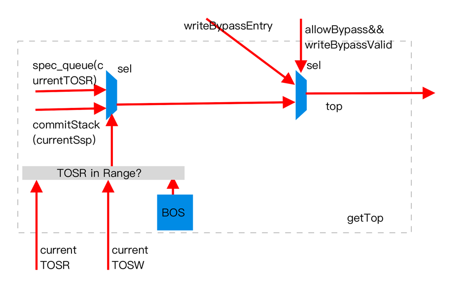
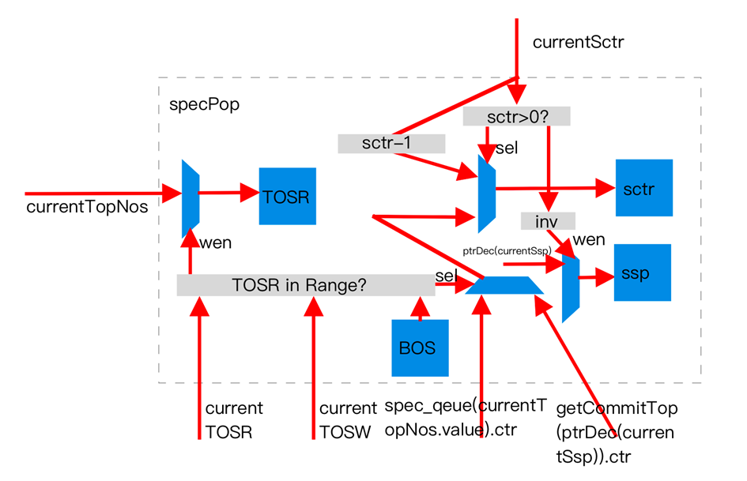
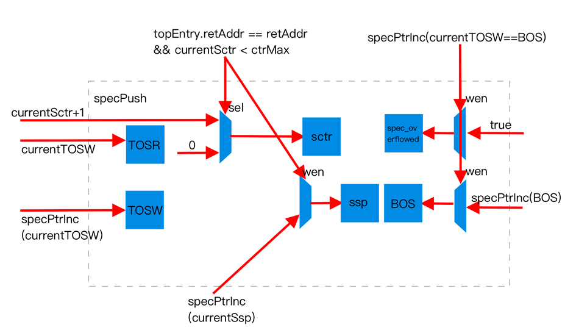

BPUサブモジュール RAS
用語説明
| 略語 | 正式名称 | 説明 |
|---|---|---|
| TOSW | Top Of Speculative Queue Write Pointer | スペキュラティブキュー書き込みポインタ |
| TOSR | Top Of Speculative Queue Read Pointer | スペキュラティブキュー読み取りポインタ |
| NOS | Next Older Speculative Queue entry Pointer | スペキュラティブキューのより古いエントリへのポインタ |
| ssp | Speculative Stack Pointer | 仮想スペキュラティブスタックポインタ |
| nsp | Next Stack Pointer | コミットスタックポインタ |
機能
RAS予測器は、スタック構造を使用して、関数呼び出しとリターンのようなペアでマッチングする特性を持つ実行フローを予測します。呼び出し（push/call）系命令は、ターゲットレジスタアドレスが1または5のjal/jalr命令として特徴付けられます。リターン（ret）系命令は、ソースレジスタが1または5のjalr命令として特徴付けられます。
実装では、RAS予測器はs2およびs3の2つのステージで予測結果を提供します。
昆明湖アーキテクチャのRAS予測器は、南湖アーキテクチャとは大きく異なります。永続化キューを導入することにより、新しいRAS予測器構造は、投機的実行によって引き起こされるローカル予測器のデータ汚染問題を解決します。同時に、新しい構造は、南湖アーキテクチャと同様のスタック構造をコミットスタックとして保持し、コミット後のプッシュ情報を格納することで、永続化キューの低いストレージ密度の欠点を補います。
永続化キューベースのRAS予測器アーキテクチャの概要
RAS予測器は、分岐予測FTBブロック内のcall/return命令のローカルなペアリング情報を利用して、return命令の予測を行います。通常、呼び出された関数は実行が完了すると呼び出し命令の次の命令に戻るため、RAS予測器はcall命令に遭遇した際に、現在の命令PCと現在の命令がRVC命令であるかどうか（命令幅が2か4かを決定）に基づいて、その関数呼び出しのリターンアドレスの予測結果を生成し、スタックにプッシュできます。
現代のスーパー スカラー アウトオブオーダープロセッサは、通常、深いパイプラインでの投機的実行技術を採用しています。分岐予測器は、以前に予測された命令の実行結果が確定する前に、後続の命令の予測結果を生成します。つまり、ABCという3つの連続した分岐命令の予測要求に直面した場合、RAS予測器はBを予測する際にAブロック内の命令の最終的な実行結果を取得できず、AブロックのZブロック内の命令の最終的な実行結果と、分岐予測結果に基づくZからBブロック間の投機的な結果しか取得できません。ZからBブロック間に誤った分岐予測結果が存在する場合、それに関わる分岐予測器の状態を誤予測から回復させる必要があります。前述の通り、RAS予測器はスタック構造に基づいてcall-return命令ペアを予測するため、ペアリング情報の正確性がその精度にとって極めて重要です。誤予測が発生した時点でのRAS予測器の状態を正確に復元する最も直感的な方法は、最新の予測点から誤予測点まで遡り、その間にRASスタックに加えられたすべての変更を取り消すことです。しかし、誤予測回復の迅速性を向上させるため、現代のプロセッサは通常、回復時にこのような高複雑度の操作を許容しません。南湖アーキテクチャの設計では、RAS予測器は誤予測が発生した場合、誤予測が発生した予測ブロックに対応するスタックトップエントリとRASスタックトップポインタのみを復元します。この回復戦略は、投機的実行による誤予測点のRASスタックトップおよびそれより上のデータの汚染には対応できますが、投機的実行中に先にpopしてからpushすることによるRASスタックトップより下のデータの汚染には対応できません。
このような汚染は、後続のreturn命令が誤ったターゲットにジャンプする原因となり、誤予測を引き起こします。この問題を解決するため、昆明湖アーキテクチャの新しいRAS予測器は、永続化キューを導入してRASの投機的実行中のすべてのローカル状態を保存し、上記の汚染に耐性のある予測を実現します。具体的には、永続化キューがシミュレートするスタック構造には、読み取りポインタTOSR、書き込みポインタTOSW、およびスタックの底ポインタBOSの3つのポインタがあります。各エントリは自身のデータに加えて、永続化キュー内の前のエントリの位置ポインタNOSを記録します。スタックのpush操作のたびに、TOSWを1つ前に進めて現在のプッシュデータ用に新しいエントリのストレージスペースを割り当て、現在のTOSRをTOSWの元の位置（つまり、新しく割り当てられたスペース）に向けます。新しくプッシュされたエントリが記録するNOSは、push操作前の読み取りポインタの位置を格納します。スタックのpop操作のたびに、TOSRは現在のTOSRが指すエントリ内のNOSポインタの位置に移動します。この方法により、RASは前方リンクリストを介して現在のバージョン（1つの投機的実行パスに対応）のスタックのすべてのエントリを走査でき、この設計は他のバージョン（他の投機的実行パスに対応）のRASスタックデータを上書きすることもありません。
RASの有効なストレージ容量を向上させるため、すべてのRASエントリが永続化キュー形式で格納されるわけではありません。実践データによると、投機的実行パスのニーズを満たすためには、永続化キューには最大で約28エントリが必要となるため、RTL実装では32エントリの永続化キューが使用されています。RASエントリに対応する予測ブロック（つまり、call命令を含む予測ブロック）の命令がコミットされた後、そのブロックを永続化キューから解放してコミットスタックに移動させることができます。この解放操作は、BOSポインタをコミットされた予測ブロックに対応するTOSWポインタに変更することによって行われます。コミットスタックは南湖アーキテクチャと同じ設計を採用しており、プッシュ時にはコミットスタックポインタnspをインクリメントし、プッシュされたデータを新しいスタックトップに書き込みます。ポップ時にはスタックポインタnspをデクリメントします。コミット後の確定的な情報のみを格納するため、投機的実行による汚染の問題はありません。元のBOSから新しいTOSWまでの区間には、コミットスタック内に他の誤ったパスからのプッシュ結果が存在する可能性がありますが、これらの結果はBOSの移動中に自然に解放されます。
永続化キューとコミットスタックという2つの構造を導入したため、スタックトップエントリはどちらか一方にある可能性があり、予測結果を提供する際には動的に判断する必要があります。永続化キューはリングバッファであり、そのポインタにはアドレッシングに使用されるvalueに加えてflagビットがあります。このビットは、BOSとTOSW、TOSRの位置関係を判定するのに役立ちます。TOSRがBOSの上、TOSWの下にある場合、スタックトップエントリは永続化キューの内部にあります。TOSRがBOSの下にある場合、スタックトップエントリは永続化キューの外部、つまりコミットスタック内にあります。したがって、実行時に動的にスタックトップエントリを選択できます。注意すべきは、コミットスタックから取得するスタックトップエントリは、コミットされた命令のスタックトップと常に一致するとは限らないため、RAS予測器用に別のコミットスタックポインタsspを維持する必要があることです。これは、永続化キュー内のそのエントリがコミットスタックにプッシュされた後の位置を意味します。コミットスタックからスタックトップエントリにアクセスする際には、nspではなくsspを使用してデータ読み取りを完了します。
上記の説明はすべて、永続化キューの容量が十分でオーバーフローしないという状況に基づいています。現在のプログラムセグメント内でpush操作が非常に密集しており、バックエンドの実行速度が十分に速くない場合、永続化キューの容量が不足してオーバーフローする可能性があります。この状況には2つの可能な対処法があります：強制的に上書きするか、リターンスタックの予測を動的に無効にするかです。現在、昆明湖アーキテクチャは後者の実装戦略を選択しています。現在のBOSとTOSWが重なりそうになると、BOSを強制的に1つ進めて、永続化キューが予期せず空になるのを防ぎます。BOSが記録するエントリはこの期間中に必ずしも使用される必要はないため、この戦略はフロントエンドのブロッキングをわずかに減らすことができます。欠点は、密集したpush操作が誤ったパス上にある可能性があり、上書きされたエントリが必要になった場合に少量のポップエラーを引き起こす可能性があり、その原因が複雑であることです。動的無効化の欠点は、密集したpush操作が正しいパス上にある可能性があり、リターンスタックに書き込まれなかったエントリが存在するため、スタック内のデータが誤っている可能性があることです。再帰のような場合、このエラーの影響は軽減される可能性があります。制御可能性を考慮して、現在、昆明湖は後者の方式を使用しています。
タイミング最適化のため、スタックトップエントリの読み取り/更新は、読み取り要求を受け取ったサイクルで完了するのではなく、その前のサイクルまたはNサイクル前に、そのサイクルのプッシュ/ポップ操作に基づいて更新されます。投機キューへの書き込み操作を減らすため、BPU 2パイプラインステージのpush/pop結果も直接投機キューに書き込まれず、1サイクル遅れて書き込まれます。現在のサイクルで書き込まれたデータを次のサイクルで読み取る必要がある状況を考慮して、書き込みバイパス機構が設計されています。書き込む準備ができたデータは、まず現在のサイクルで書き込みバイパスのwriteEntry項を更新するために使用されます。次のサイクルで要求された読み取りポインタが書き込みバイパスに記録されたポインタ位置と一致する場合、バイパス値が使用されます。そうでない場合は、スタックトップから読み取られた値が使用されます（実際には、タイミング最適化のため、このロジックはスタックトップを読み取る前のサイクルに前倒しされています）。
2段階目の結果
BPUの2段階目では、他の分岐予測器の予測結果がまだ完全に確定していないため、更新が必要な予測結果が存在する可能性があり、現在の予測結果は最終的に確定した投機的実行パスではありません。現在の予測結果は、同時に3段階目にある分岐予測ブロックに対して、現在の2段階目の予測ブロックの開始アドレスを変更せず、現在call/ret命令の前にある他の分岐命令が再び分岐予測されることはないという仮定を立てています。2段階目でFTBから渡されたFTBエントリが有効で、その中にpush系命令が存在する場合、その命令の次の命令のPC値をRASスタックにプッシュします。2段階目でFTB予測器から渡されたFTBエントリが有効で、その中にpop系命令が存在する場合、現在のスタックトップのアドレスを結果として返し、結果をスタックからポップします。
RAS内では、上記のアクションは次のように具体的に分解されます。
2段階目のFTBエントリ内で予測された分岐call命令を見ると、s2_spec_push信号をハイにし、現在のcall命令のPCに基づいてプッシュするアドレス情報を生成し、内部のRASStackモジュールに動作を指示します。RASStackモジュールはpush動作を検出すると、渡されたスタックトップアドレスを新しく書き込む永続化キューエントリの予測アドレスとして使用します。新しい書き込みアドレスが元のアドレスと同じで、元のスタックトップのカウンタが飽和していない場合、元のスタックトップエントリのカウンタ+1を新しいエントリのカウンタとして使用し、そうでない場合は新しいエントリのカウンタを0にします。生成された新しいエントリは、次の3つの用途に使用されます：1. 次のサイクルでwriteByassEntryレジスタを更新し、連続した予測でスタックトップエントリを読み取るために使用します。2. 現在のサイクル内でスタックトップエントリを更新し、連続した予測で読み取るために使用します。3. パイプラインを経て、次の次のサイクルで永続化キューを更新するために使用します。同時に、前述のように、TOSRは現在のTOSWに更新され、TOSWは現在のTOSW+1に更新されます。グローバルのssp、sctrも上記と同様のカウンタ更新アルゴリズムに従います。新旧のスタックトップアドレスが同じで、元のsctr（元のスタックトップエントリのctrと同じ）が飽和していない場合、sspは変わらず、sctr=sctr+1となります。そうでない場合はssp=ssp+1、sctr=0となります。永続化キューがオーバーフローする可能性に対処するため、この時点で永続化キューがオーバーフローしそうな場合、リターンスタック予測器は一時停止されます。
2段階目のFTBエントリ内で予測された分岐call命令を見ると、s2_spec_pop信号をハイにし、内部のRASStackモジュールに動作を指示します。RASStackモジュールはpop動作を検出すると、現在のsctrが0でない場合、sctr=sctr-1、sspは変わらず、そうでない場合はssp=ssp-1、sctr=新しいスタックトップエントリのsctrとなります。TOSR=元のトップのNOS、TOSWは変わりません。別途維持されているスタックトップエントリも、更新されたssp、sctr、TOSR、TOSWを使用して更新されます。
3段階目の結果
3段階目のFTBエントリ内で予測された分岐return命令を見ると、s3_push信号をハイにします。3段階目のFTBエントリ内で予測された分岐call命令を見ると、s3_pop信号をハイにします。現在の予測ブロックが2段階目で行った予測結果も、それぞれパイプラインを経て3段階目に渡されます（s3_pushed_in_s2およびs3_poped_in_s2）。2段階目と3段階目で判断されたアクションが異なる場合、3段階目で回復を行う必要があります。回復するかどうかにかかわらず、3段階目では2段階目で読み出されたRASスタックトップエントリを予測結果として使用します。
2段階目のpush/popと3段階目のpush/popは以下のいくつかのケースしか存在しないため、3段階目はpush/pop操作によって2段階目の操作を取り消すことができます。
| S2 push | S3 push | 修正不要 |
| S2 push | S3 keep | popで修正 |
| S2 keep | S3 push | pushで修正 |
| S2 keep | S3 keep | 修正不要 |
| S2 keep | S3 pop | popで修正 |
| S2 pop | S3 keep | pushで修正 |
| S2 pop | S3 pop | 修正不要 |
3段階目のpush/pop操作のRASStack内での具体的な動作は2段階目と同じであるため、ここでは繰り返し説明しません。
誤予測状態の回復
予測ブロックがBPUを離れた後、IFUまたはバックエンドでの実行中にリダイレクトがトリガーされる可能性があります。リダイレクトに遭遇した場合、RAS予測器は状態を回復する必要があります。具体的には、RASのTOSR、TOSW、ssp、およびsctrは、誤予測が発生する前の対応するメタ情報に基づいて回復する必要があります。その後、誤予測した命令自体がcall/return命令であるかどうかに応じて、それぞれpushおよびpop操作によってスタック構造を調整する必要があります。Pushおよびpop操作の具体的な動作は、2、3予測パイプラインステージと同じであるため、ここでは省略します。
コミットエントリの移行
前述のように、call命令を含む予測ブロックがコミットされる際、BOSは予測時のTOSWに更新され、同時に予測ブロックに対応するエントリがコミットスタックのスタックトップ（nspでアドレッシング）に書き込まれ、nspが更新されます。Nspの更新アルゴリズムはsspと同様で、再帰が存在し、スタックトップのカウンタが満杯でない場合はcounter=counter+1、nspは変わらず、そうでない場合はnsp=nsp+1、counter=0となります。
全体ブロック図

インターフェースタイミング
RASモジュール 2段階更新 入出力インターフェース

上の図は、RASモジュールの2段階更新における1回のpopと1回のpushを示しています。pushとpopのブロックの前の分岐予測スロットはどちらも無効であるため、このパイプラインステージでreturnとcall命令の分岐が見られ、それぞれRASStackモジュールにスタックからのポップ/プッシュを指示します。プッシュ時には、FTBのfallThroughアドレスを分岐リターンアドレスとして使用します。最後の命令が切り捨てられたRVI call命令である場合、そのアドレス+2が正しいリターンアドレスになります。
RASモジュール 3段階更新 入出力インターフェース

RASStackモジュール 入力インターフェース

上の図は、RASStackモジュールの2段階更新における1回のpushと1回のpop操作を示しています。push操作の後、RASStackモジュールから読み出されたスタックトップが新しくプッシュされた値に更新され、pop操作の後、スタックトップがpush操作前の値に復元されることがわかります。
RASモジュール リダイレクト回復インターフェース

上の図は、RASおよびRASStackモジュールがリダイレクトから回復し、回復点の命令がcall命令である場合を示しています。BPUから渡されたリダイレクト信号は、RAS予測器内部で1サイクル遅延された後、RASStackに送られ、永続化キュー内の各ポインタを回復するために使用されます。この誤予測点の命令はcall命令であるため、新しいエントリをプッシュする必要もあります。

同様に、誤予測点の命令がreturn命令であれば、当時のスタックトップに基づいて1エントリをポップする必要があります。
RASモジュール 命令コミットトレーニングインターフェース

図は、return命令を含むコミットとcall命令を含むコミットをそれぞれ1回ずつ示しています。コミット時にはコミットスタックトップが変化し、call命令がコミットされた後にはBOSポインタも対応して調整されることが確認できます。
RASの記憶構造
リターンスタック予測器は、推測キュー（永続化キュー）とコミットスタックで構成されています。推測キューは32項目、コミットスタックは16項目です。
推測キューの項目構造は以下の通りです。
| retAddr | sctr | nos |
|---|---|---|
| リターンアドレス | 同一リターンアドレスが連続して現れた回数 | 推測キュー内のより古い項目位置 |
コミットスタックの項目構造は以下の通りです。
| retAddr | sctr |
|---|---|
| リターンアドレス | 同一リターンアドレスが連続して現れた回数 |
予測と更新
リターンスタックは他の予測器とは異なり、推測キューに関しては予測と同時に更新が行われます。コミットスタックの更新は命令がリタイアしたときに行われます。以下の図は、リターンスタックがアドレスを取得する手順、推測Pop、および推測Push時に推測キューへ適用される更新をそれぞれ示しています。
スタックトップアドレスの取得

リターンスタックのスタックトップデータは推測スタックにある場合と、コミットスタックにある場合があります。推測スタックが空であればスタックトップはコミットスタック側に存在します。推測スタックとコミットスタックは異なる戦略で管理されます。推測スタックは投機実行用であり、巻き戻しが可能です。コミットスタックのデータは確定的であり、巻き戻しは許されません。推測スタックが空でないことを判定する条件は BOS <= TOSR < TOSW です。逆であれば推測スタックは空です。（補足すると、推測スタックがポップするとき TOSR は BOS に近づく方向へ移動します。したがって TOSR が推測スタック内に存在しなければ、推測スタックは空であると判断できます。推測スタックのデータはどこへ行くかというと、コミットスタックに移されます。これは BOS 更新ロジックと関連しており、前提として推測スタックがオーバーフローしないことが必要です。）
推測ポップ

推測スタックで Pop を行う際には、現在の推測スタックのスタックトップを指すポインタ TOSR だけを移動します。TOSR := spec_nos(TOSR) となり、NOS を更新する必要はありません。各推測スタック項目が nos を保持しており、TOSR の移動によって自動的に追従するためです。TOSW は移動せず、プッシュ履歴を保持して後続のロールバックに備えます。もう1つの指標として ssp があり、予測過程でのスタックトップ位置を記録します。ssp の更新は元々の RAS スタック結果に従って行われ、Pop の際には sctr の値に応じて ssp をデクリメントするかどうかが決まります。
推測プッシュ

推測スタックで Push を行う際には、TOSW := TOSW + 1、spec_nos(TOSW) := TOSR、TOSR := TOSW、spec_queue(TOSW) := io.spec_push_addr、ssp = ssp + 1.U となります。新しい項目を押し込むと、TOSW は未割り当ての新しい項目を指し、TOSR は新しいスタックトップを指し、NOS ポインタは以前のスタックトップの位置を記録して spec_nos キューに保持され、後続の回復で利用できるようにします。新しく追加された項目のアドレスは spec_queue に格納されます。（スタックが成長し続けたらどうなるのかという疑問に対しては、BOS ポインタ更新とスタックオーバーフロー処理メカニズムが用意されています。）
コミットスタックの更新
コミットスタックの更新は一般的なリターンスタック構造と同様で、詳細な説明は割愛します。唯一の違いは、Push と Pop の信号が対応する call / ret 命令のリタイア時に発生する点です。